Antigravity in Chrome
Chat with your live webpage, compare open tabs with @, trigger workflows with /, or switch to Agent Mode to let Antigravity drive your browser.
Synced two-way bridge: Start chats here and view or continue them anytime inside the Antigravity Desktop App.